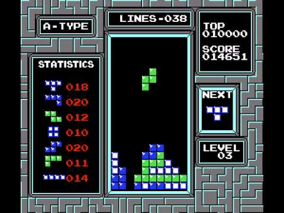
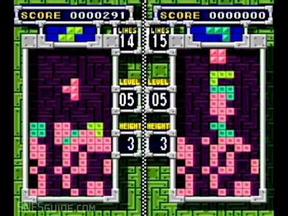
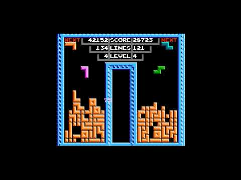
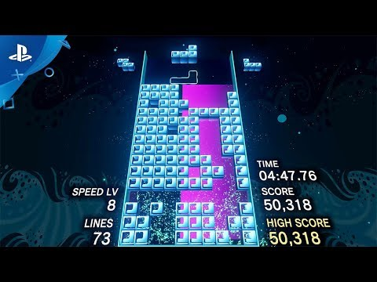
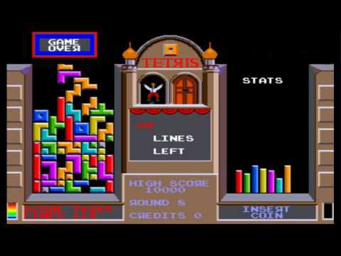

Tetris® è stato, al tempo della sua creazione, un importante
videogioco che insieme ad altri grandi titoli gettò le basi per gli arcade più evoluti.
Le varie versioni del gioco, evolutosi nel corso del tempo, contribuiscono a
mostrare in parte lo sviluppo dei videogiochi arcade.
Maggiori dettagli all'interno della sezione Storia del sito.
Il Grande Classico Arcade





Il puzzle game più famoso
Tetris® è un videogioco arcade nato negli anni '80.
Richiede abilità e strategia nel ruotare e muovere
i tetramini all'interno della matrice rettangolare
a velocità variabile.
È uno dei videogiochi più influenti e riconosciuti
nel mondo, con oltre centinaia di milioni di
giocatori.